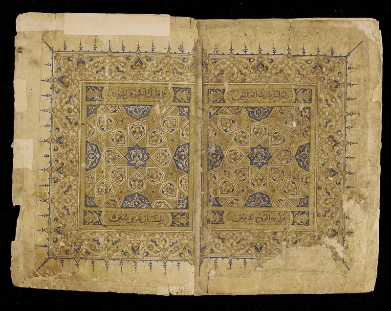
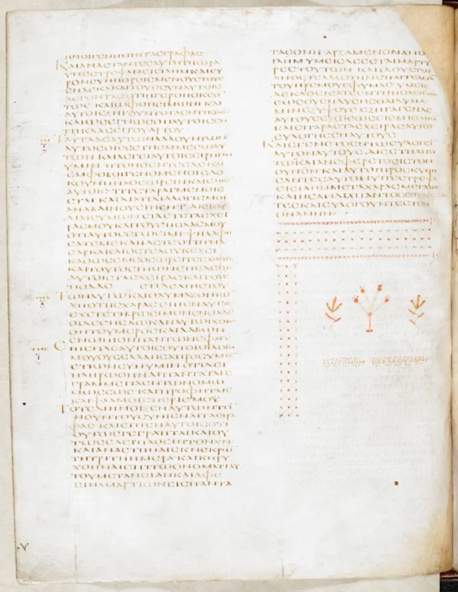
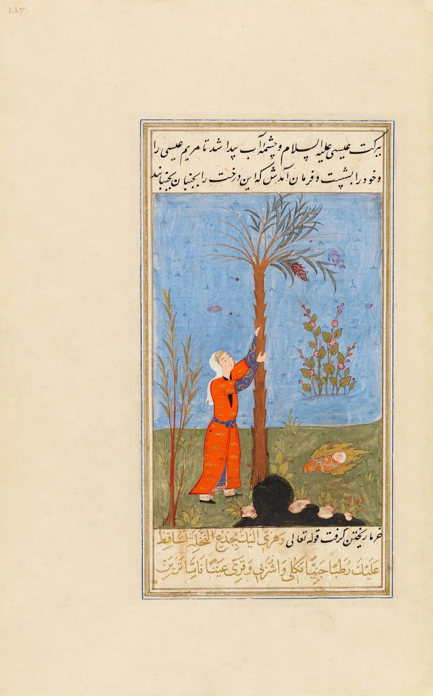

Muslim scholars have a real answer here. Say so before your friend does.
Born of a virgin (Quran 3:47). Called "the Messiah, Jesus son of Mary, distinguished in this world and the Hereafter" (3:45).
Announced as a pure boy, meaning sinless (19:19). Healing the blind and the leper, and raising the dead (3:49; 5:110).
Never dead, but raised to Allah (4:158). Returning at the end of the age (Sahih al-Bukhari 3448).
The Quran tells him to ask forgiveness for his sin, twice (47:19; 48:2). He works no miracle in the Quran.
He died in Medina and is buried there. That comparison is the Quran's own, not ours.
This is Islam's best-drilled ground. Quran 3:59 says the case of Jesus is like Adam, created from dust by the word Be.
Adam had no father and no mother, so a virgin birth shows power, not deity. Every miracle in 3:49 carries the phrase bi-idhnillah, by Allah's permission.
Quran 2:253 says prophets differ in gifts, not in nature. Omar Suleiman of the Yaqeen Institute makes this case well.
And Quran 5:116-117 has Jesus himself refuse the title.
The Adam answer covers origin only. Adam sinned.
Jesus is the one figure the Quran calls pure. He is never shown sinning, never recorded dying, and is alive in heaven now.
He is titled al-Masih, Messiah, which the Quran never defines.
Genuinely arguable, both ways. Each piece has a rehearsed reply.
The whole pattern does not. Treat it as a door, not a defeater — it starts a conversation about Jesus rather than ending one.
"Why do you think God gave Jesus a record he gave to nobody else, including Muhammad?"



They say Jesus is like Adam, made by a word, and still only a servant.
The Quran heads off that conclusion itself. Quran 3:59 says the case of Jesus with Allah is like the case of Adam. He was created from dust, then told: Be, and he was. A birth with no father shows creative power, not deity. Adam had no father and no mother, so he would be more divine still. Omar Suleiman of the Yaqeen Institute develops this reading.
Every miracle in Quran 3:49 carries the phrase bi-idhnillah, by Allah's permission. That marks Jesus as a servant given power, not a source of it. His purity and his rising are honours Allah gives to whom He wills. Quran 2:253 says prophets differ in gifts, not in nature. Jesus is honoured exactly as the second greatest of servants. He is never God's son, a title he himself will disown (5:116-117).
A door, not a defeater: each piece has a reply, the whole pattern does not.
The Adam parallel and the bi-idhnillah refrain are real answers, taken one at a time. They handle the virgin birth and the miracles. This is Islam's best-drilled ground.
But the parallel covers origin only. Adam sinned. Jesus is the one figure the Quran calls pure. He is never shown sinning. He is never recorded dying. He is titled al-Masih, Messiah, and that title is never defined. He waits alive in heaven for his return, while the final prophet is twice told to seek forgiveness for his sin.
The whole pattern goes unanswered, even though each part has a rehearsed reply. That is why this is contested, not unrefuted. Treat it as a door-opener, not a defeater.